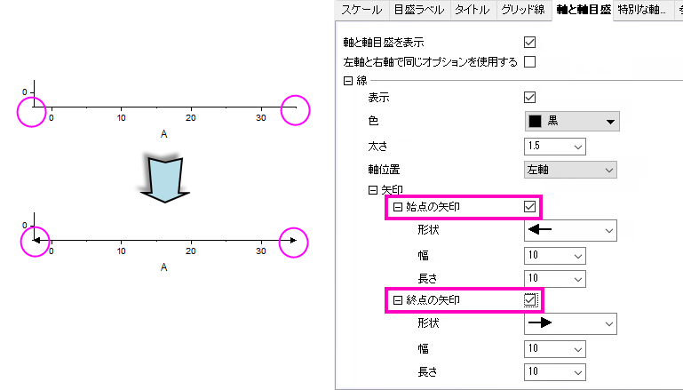

FAQ-881 軸の開始/終了位置に矢印を表示することはできますか?
Add_Arrow_At_Axis
最終更新日:2017/9/12
軸ダイアログを使ってグラフの軸の開始/終了位置に矢印を表示できます。
- 軸ダイアログをダブルクリックして、軸ダイアログを開きます。
- 軸と軸目盛タブを開き、線の下の矢印の項目を開きます。
- 始点の矢印または終点の矢印にチェックをつけます。
- 始点の矢印または終点の矢印の項目を拡張し、矢印の形状を設定できます。

キーワード:軸, 矢印, 始点の矢印, 終点の矢印
必要なOriginのバージョン: Origin 2018 SR0以降